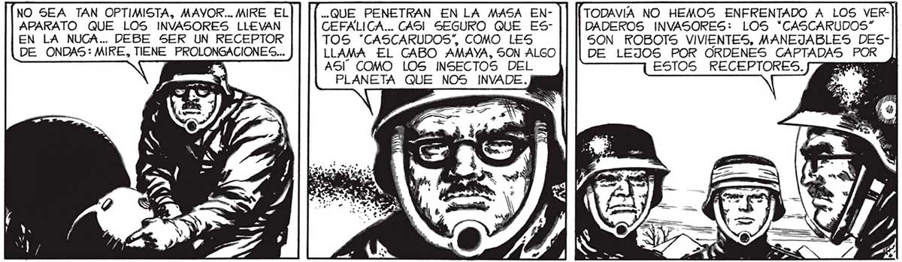
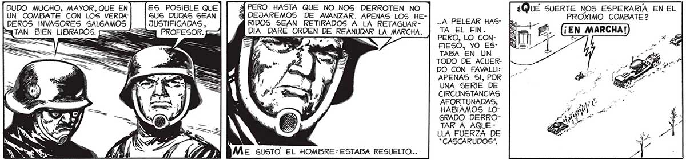
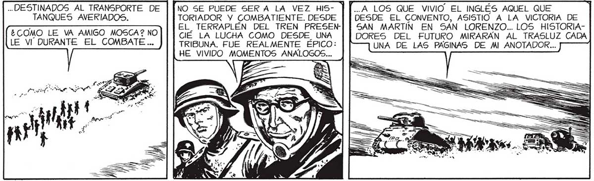

LOS INVASORES NO SON TAN TEMIBLES, DESPUES DE TODO... LOS HEMOS MUERTO A MONTONES. NO SEA TAN OPTIMISTA, MAYOR... MIRE EL .. QUE PENETRAN EN LA MASA EN- TODAVIA NO HEMOS ENFRENTADO A LOS VERAPARATO QUE LOS INVASORES LLEVAN CEFALICA... CASI SEGURO QUE ES- DADEROS INVASORES: LOS *CASCARUDOS” EN LA NUCA... DEBE SER UN RECEPTOR TOS "CASCARUDOS”, COMO LES SON ROBOTS VIVIENTES, MANEJABLES DESDE ONDAS: MIKE, TIENE PROLONGACIONES... LLAMA EL CABO AMAYA, SON ALGO DE LEJOS POR ORDENES CAPTADAS POR AS'' COMO LOS INSECTOS DEL ESTOS RECEPTORES. PLANETA QUE NOS INVADE. DUDO MUCHO, MAYOR, QUE EN ES POSIBLE QUE 4 PERO HASTA QUE NO NOS DERROTEN NO UÉ SUERTE NOS ESPERARÍA EN EL UN COMBATE CON LOS VERDA” GUS DUDAS SEAN 9 DEJAREMOS DE AVANZAR. APENAS LOS HE- PROXIMO COMBATE 2 DEROS INVASORES SALGAMOS JUSTIFICADAS , RIDOS SEAN RETIRADOS A LA RETAGUAR- | -A PELEAR HAS ky STAN BIEN LIBRADOS. [==ss35 =a PROFESOR. Y DIA DARÉ ORDEN DE REANUDAR LA MARCHA. q e La == === AO == E - a - : e ] . A = == Sal ==> == dudo y FIESO, YO ES! TABA EN UN TODO DE ACUERDO CON FAVALLI: APENAS Sl, POR UNA SERIE DE CIRCUNSTANCIAS AFORTUNADAS, HABIAMOS LOGRADO DERROTAR A AQUELLA FUERZA DE “CASCARUDOS”. .. DESTINADOS AL TRANSPORTE DE | | NO SE PUEDE SER A LA VEZ HIS- | |..A LOS QUE VIVIO EL INGLÉS AQUEL QUE TANQUES AVERIADOS. TORIADOR Y COMBATIENTE. DESDE | | DESDE EL CONVENTO, ASISTIO A LA VICTORIA DE | POBRE, POBRE RuUnos MINUTOS : EL_ TERRAPLÉN DEL TREN PRESEN] | SAN MARTIN EN SAN LORENZO.. LOS HISTORIA- | PERTO MOSCA... MAS Y DEJA- ¿COMO LE VA AMIGO MOSCA? NO [|| CIÉ LA LUCHA COMO DESDE UNA DORES DEL FUTURO MIRARÁN AL TRASLUZ CADA] NADA TAN PATÉMOS LA ROTON [LE VI DURANTE El COMBATE... J | TRIBUNA. FUE REALMENTE ÉPICO: UNA DE LAS PÁGINAS DE MI ANOTADOR... TICO_COMO DA TAN DURA- HE VIVIDO MOMENTOS ANALOGOS... , LOS RELATOS MENTE CONQUIS* ” E == QUE ESCRIBIO TADA. A NUES” ES == TRO LADO DESFILARON LAS ESCUELAS RAGGIO, EN SU ANOTADOR: A LA LUCHA POR LA ROTONDA LA LA ESCUELA DE it ES | == ; ===> O "EL COM4 e ; A == BATE DE LA GEMECANICA DELA |. y REJAS y ( | SS a === NERAL PAZ” A ARMADA... EL RR y Vb: ? A ==. e . 3 LA ACCION QUE St ROS : Sy. Va MS a AS] SUIO LA ANOTO CO IBA MONTADO EN | : | e =8 + TORA MO UI UNO DE LOS A Y E. | 8 Bo AE DE RIVER PLATE” CAMIONES... sl l 4


